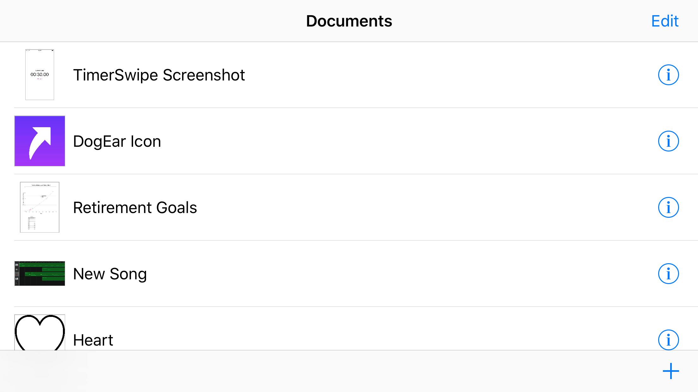

DogEar
Summary
DogEar was an iOS utility app that made it easier to access your favorite or most-needed documents. It was built around security-scoped bookmarks to files in other applications’ iCloud Drive containers.
I have halted development on DogEar in light of the Files app included in iOS 11. Files and the related APIs appear to solve the problem DogEar was intended to address.
Features
- Central access to widely-dispersed documents
- Allows fast QuickLook of bookmarked documents
- Open bookmarked documents in their containing apps, using open-in-place where applicable
- Bookmarked documents can be given custom display names and colors without modifying the underlying file name or attributes.
Interesting Bits
Every table view cell in DogEar includes a UIImageView that may have its underlying image data change from time to time. I wanted each UIImageView to create an aspect ratio constraint based on its image data and return it for future use. I accomplished this with retroactive modeling on UIImage and UIImageView.